VLTD walkthroughs
Add an item, build and share an exhibition, import a spreadsheet, and switch between Personal and Business profiles. Taken on the live site with a throwaway test account and made-up data (deleted afterwards).
vltd.app, code up to commit 97739e6 (import wording fixes 9679c45/79fbb34, category label fix ee4f8fe and exhibit-name fix 97739e6 came in during the pass).Viewport: desktop browser pane (1280 × 720) unless a step says otherwise. Narrow-screen checks used an emulated 320 / 390 px viewport, not a physical phone.
Media: numbered screenshots only. No screen recording was produced (the browser pane used for testing cannot record video); the narration scripts and shot lists below are ready for a later recording. If the app changes after the commit above, re-check the labels.
Not captured / not verified: real camera capture (blocked in the test browser), physical phone, push notifications, Comcast email delivery.
- 1. Add an item
- 2. Build, preview and share an exhibition
- 3. Import a spreadsheet
- 4. Switch profiles (Personal / Business)
- 5. Light theme and narrow-screen checks (QA evidence)
- Separate Help topic: deleting
- Video outlines
1. Add an item
Add a photo
On Vault choose ADD ITEM. Take a picture, or use the upload icon (top left of the capture panel) to choose a file. The photo appears in the photo strip.
Expected: the photo shows as the first thumbnail and the title box becomes "Ready to save" once named.
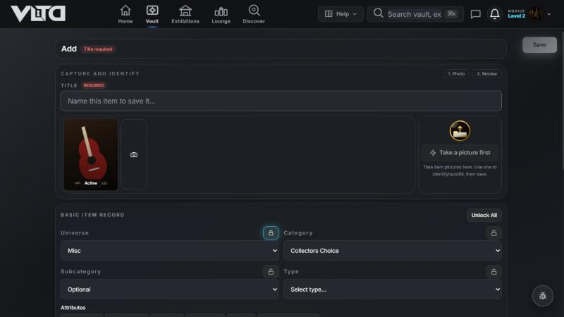
Name it and fill in what matters
Type the Title, pick Universe and Category, then add the series, purchase price and current value.
Expected: the chosen universe and category show by name (for example Music · Instruments & Gear).
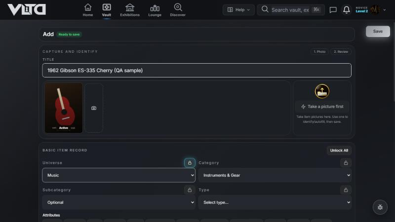
Save
Press Save (top right).
Expected: a green ✓ Saved! banner. The form clears for the next item, keeping any fields whose lock is on. If your account cannot be reached, the item is kept on the device and a "Saved on this device — sync pending" note appears instead.
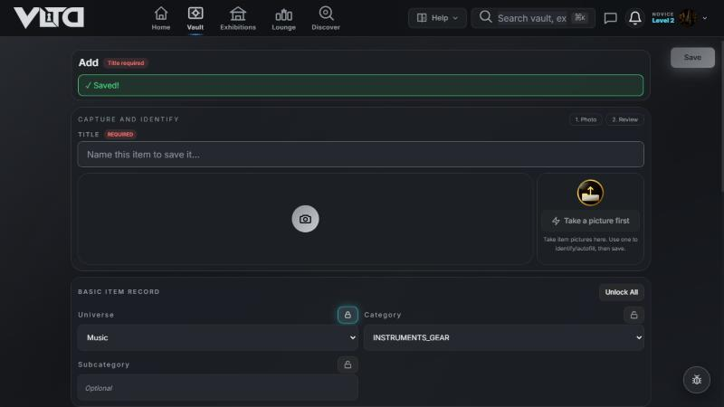
Find it in your Vault and reopen it
Open Vault; the new item is in the list and the totals have moved. Open the item to see its details.
Expected: title, category, photo, cost and value are as saved; the item stays after a reload.
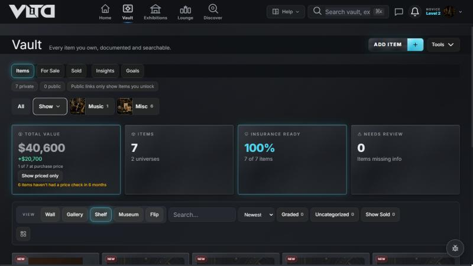
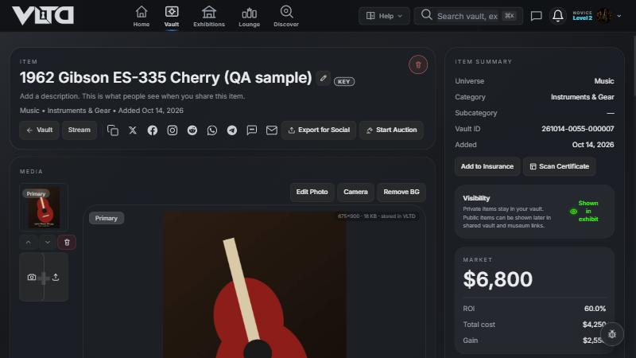
2. Build, preview and share an exhibition
Create the exhibition
Exhibitions → Create First Exhibition (or + Create Exhibition). Type a title and a short description.
Expected: the form lists your plan and remaining slots.
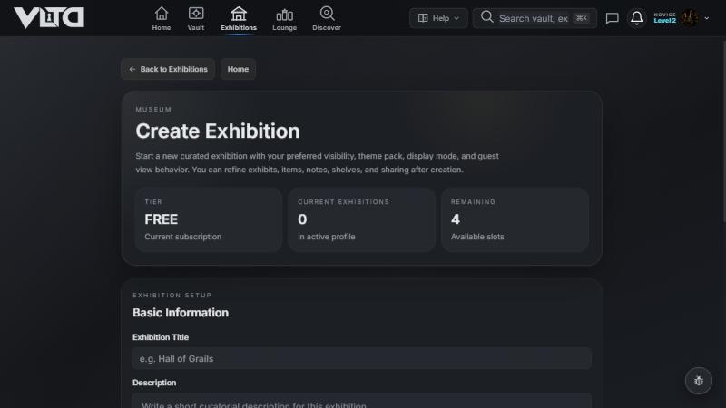
Choose who can see it
Under Visibility pick Private, Public Exhibit, Guest View or Registered Users (Private needs a paid plan), then Create Exhibition.
Expected: private is explained as "only for yourself, good for test beds before sharing".
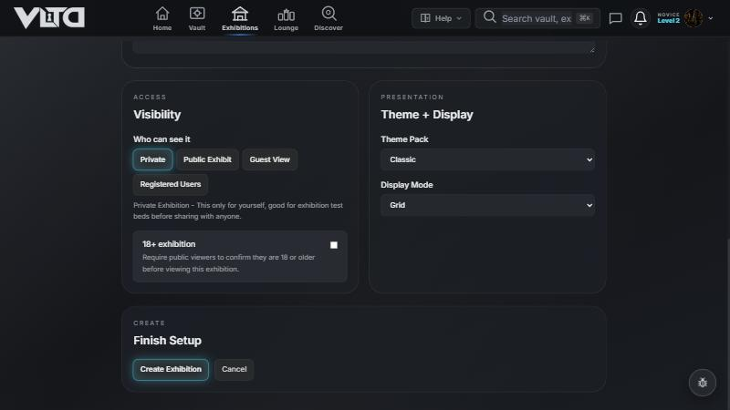
Add items
On the exhibition page choose Edit/Add, tick items in the picker (the counter shows how many of 18), then Add to Exhibit (n).
Expected: the picked items appear on the shelf, "Saved to your account" shows, and the curated value and cost update.
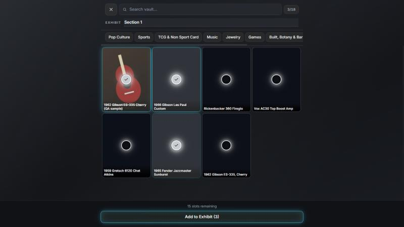
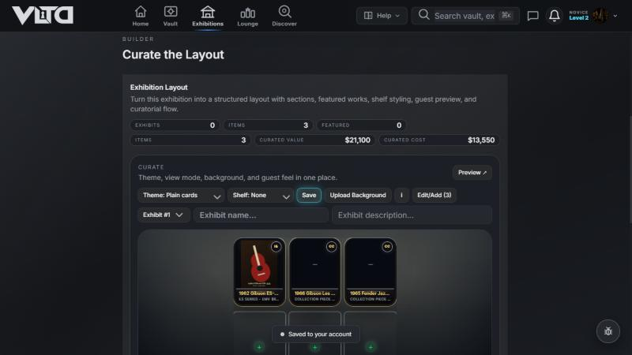
Name the exhibit page and save
Type an exhibit name and description in the builder and press Save.
Expected: the name is kept after a reload. (Before commit 97739e6 the name was silently dropped on a gallery with no exhibit page yet; that is fixed.) Reordering by drag was attempted with a scripted drag and not confirmed, so arranging is not captured.
Make it public and share
Under User access mode choose Public Exhibit, then confirm Make public. Use Copy Link or the share icons.
Expected: "Exhibition published!", the status chip reads Public, and the link works signed out.
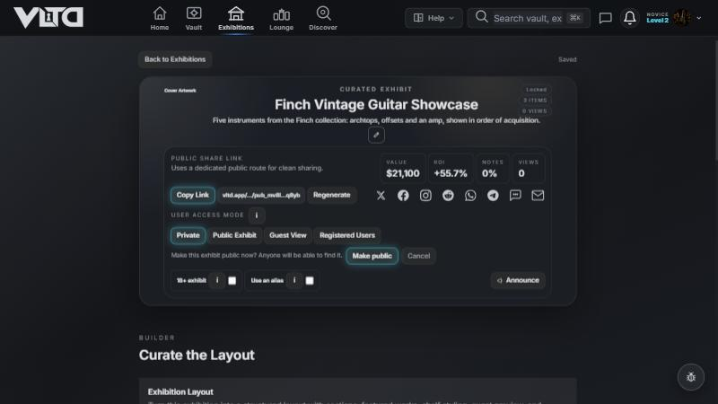
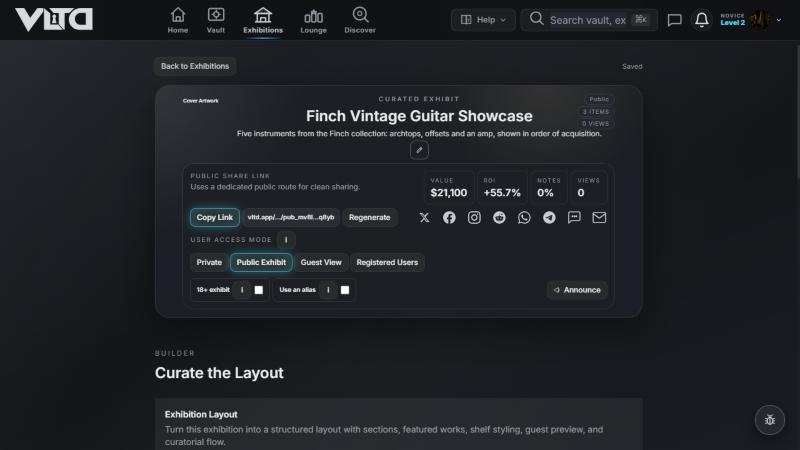
Preview as a guest
Open the exhibition's guest route (Preview ↗ / /guest) to see what visitors see.
Expected: title, description, owner display name, item count and the items.
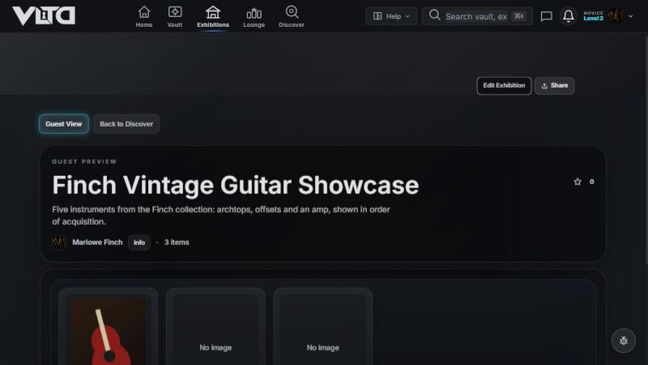
3. Import a spreadsheet
Upload the file
Choose Upload Spreadsheet and pick the file (or paste rows from Google Sheets and press Parse Pasted Rows).
Expected: "Parsed 5 items from finch-guitar-collection.csv. Review mappings before import." The blank line and the totals row are ignored (Ignored Rows 1).
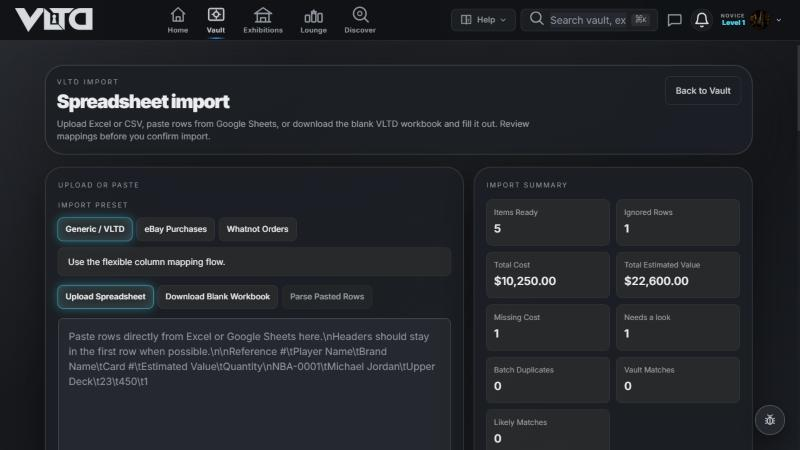
Choose how duplicates are handled
Pick Import all parsed rows, Skip exact duplicate titles within this batch or Skip exact titles already in vault.
Expected: the Duplicate detection panel explains that an exact match needs the same description and the same serial number.
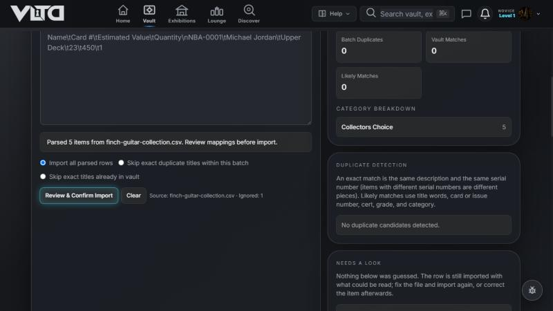
Check the warnings and column mapping
"Needs a look" lists anything that was not guessed (for example a value of "abc" or a date of "not a date"). Mapping preview shows which column went to which VLTD field and can be changed.
Expected: the row is still imported with what could be read, and the note says exactly what was not.
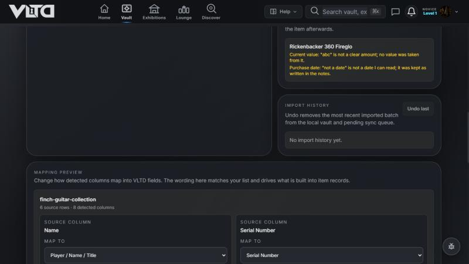
Confirm
Press Review & Confirm Import, then Confirm Import 5 Items.
Expected: "Imported 5 items…", an import history entry with Undo last, and the "Saved to your account" note. The Vault then lists them; cloud check: 5 rows in the Personal profile, 0 in the Business profile.
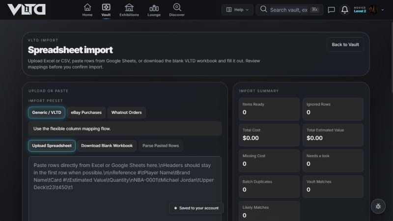
Import the file again (duplicates)
Upload an updated file with the same pieces plus one new guitar and choose Skip exact titles already in vault.
Expected: Vault matches 5, only the new piece is imported, and the message says "Skipped 5 exact duplicates (same description and serial number)". (Fixed in 79fbb34: the message used to count the skipped rows' value and missing cost.)
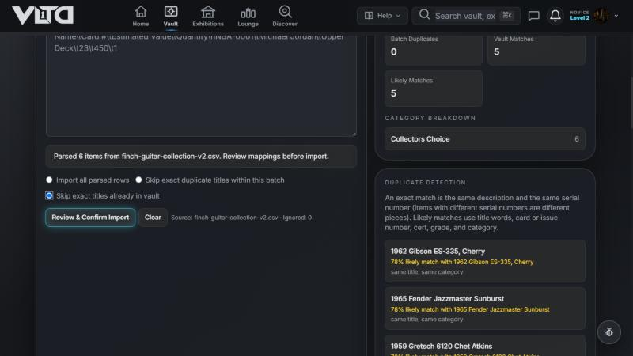
4. Switch profiles (Personal / Business)
Create the Business profile during setup
On "Your personal account" pick an avatar, display name and username, then Save and continue. Choose Add a business profile and enter name, handle and type.
Expected: a Personal and a Business profile, each with its own vault and exhibitions.
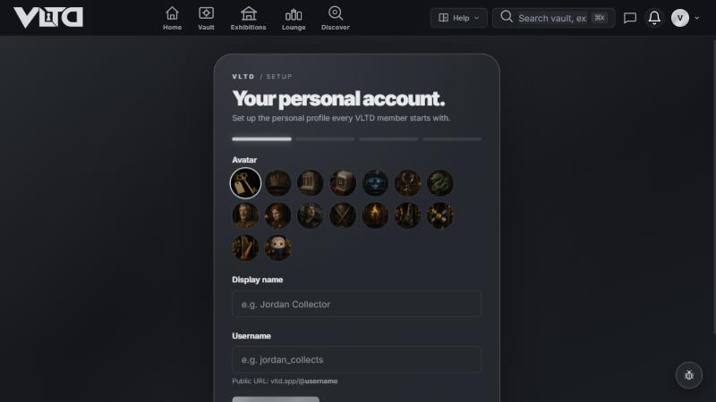
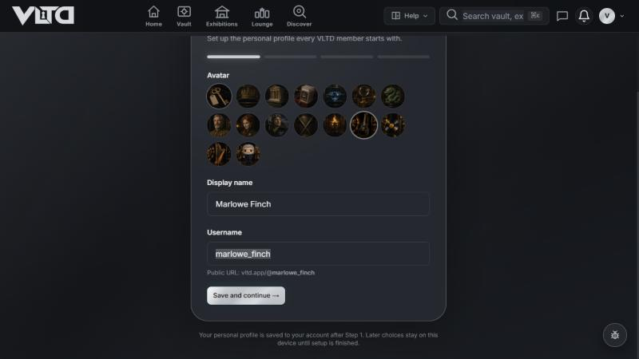
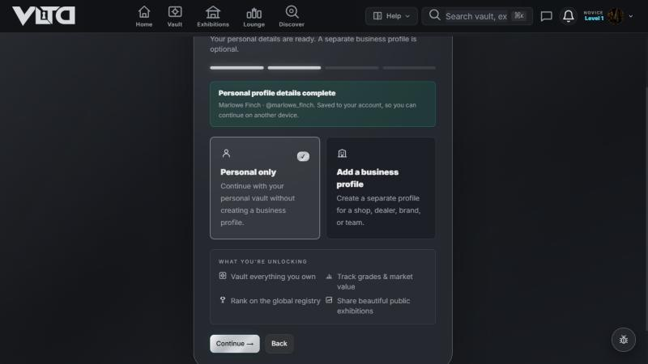
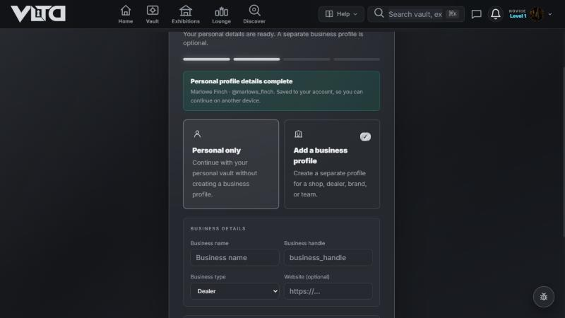
Switch with the account menu
Open the account menu and, under Switch profile, choose the other profile.
Expected: the app reloads into the other profile at once. Exhibitions on the Business profile start empty.
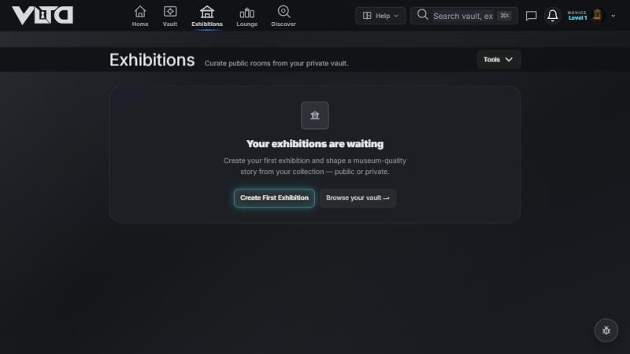
Each profile keeps its own exhibitions
Create an exhibition on the Business profile, then switch back.
Expected: Business shows only its own exhibition; Personal shows only its own, also after a reload. Cloud check: the Personal profile held 7 items and 1 exhibition, the Business profile 0 items and 1 exhibition.
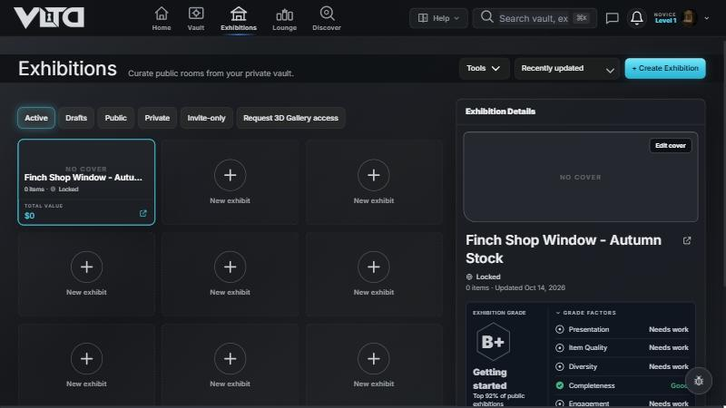
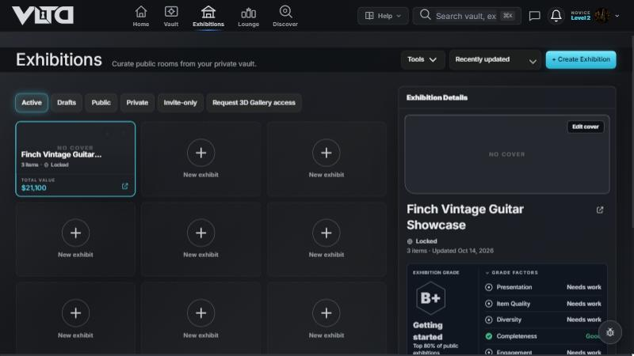
5. Light theme and narrow screens (QA evidence)
Appearance → Light
Account menu → Appearance (opens Settings → Preferences). Choose Light, then Save. The page says "Light themes are in beta".
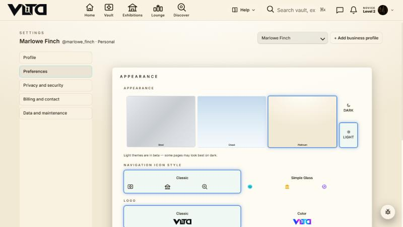
Save-status note and long message at 390 px (emulated)
Expected: the "Saved on this device — sync pending" note sits above the bottom navigation and the long toast wraps inside the screen without covering the nav.
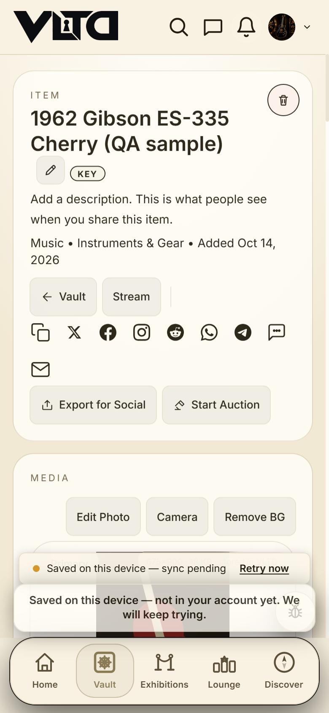
Delete dialog at 320 px (emulated)
Expected: the dialog fits the screen; Cancel and Delete Forever are both reachable above the bottom navigation.
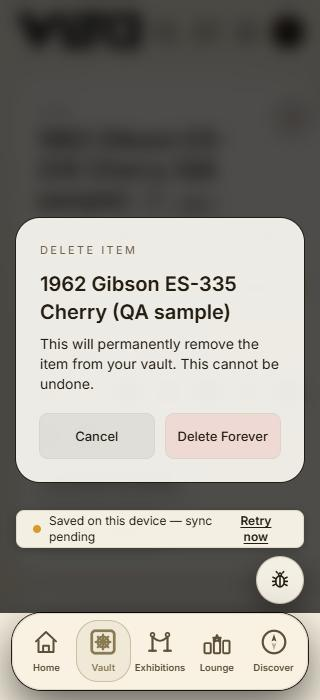
Separate Help topic: deleting
- Delete an item: open the item → trash icon (Delete item) → read the warning → Delete Forever (or Cancel). Items removed from the cloud stay gone after a reload.
- Delete an exhibition: Exhibitions → the trash icon on its card (Delete exhibition …) → Yes Delete FOREVER (or Cancel, keep My Exhibition).
- If the account cannot be reached the app says so and keeps the item; nothing is reported as deleted that was not.
Video outlines (not published)
Social cut (30–45 s): hook "Your collection, on the record" → photo, name, Save (add item, 8 s) → pick items and publish (exhibition, 12 s) → Copy Link / guest view (6 s) → end card with the site name. Reuse screens from sections 1–2.
Help / YouTube (about 6 min): 0:00 what VLTD is · 0:30 set up profiles and switch (section 4) · 1:30 add an item (1) · 2:45 import a spreadsheet and read the warnings (3) · 4:15 build, preview and share an exhibition (2) · 5:30 where to get help; delete is a separate short video (Help topic above).